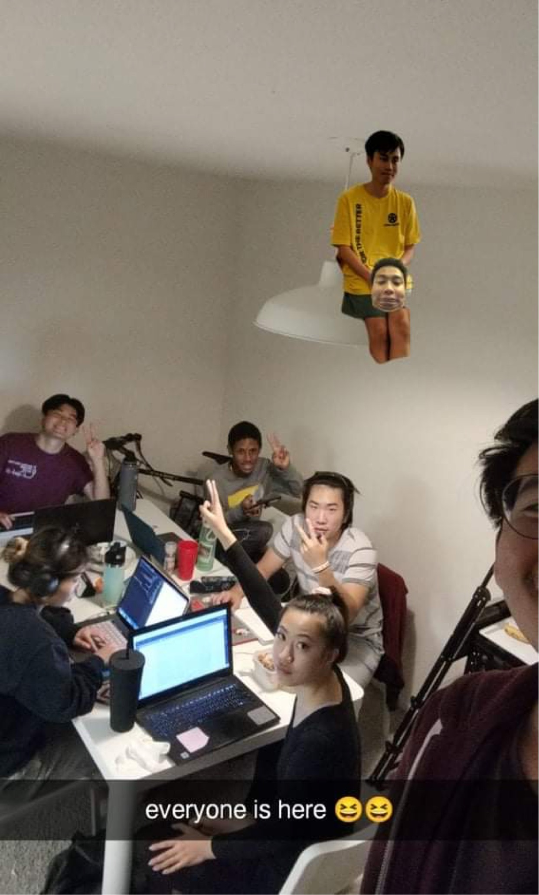

04
For my studio project, I want to collect images of trash I've found on the street and highlight the reasons I was intrigued by the trash. In this example, I found a can opener on the ground on my way to a bar. I liked that the can opener was closed; I almost couldn't tell what it was at first. I was also confused by its location. It wasn't near any residential buildings; it was on the street outside of Philz. I liked the red and how it stood out against the concrete. This fits in with my project because most of my images feature my shoes and a single random item I found on the street.
Yutaka's image is about all of his friends and housemates. I like the edit of one of his friends on the lamp and how everyone is doing something different in the photo. It's very much a college stressed/fun work session vibe that evokes a lot of familiar feelings. I like seeing what's on the computer screens and the table.